Physics 230A/146A — Biological Physics
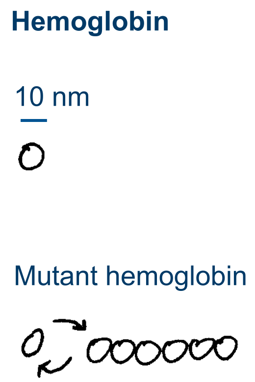
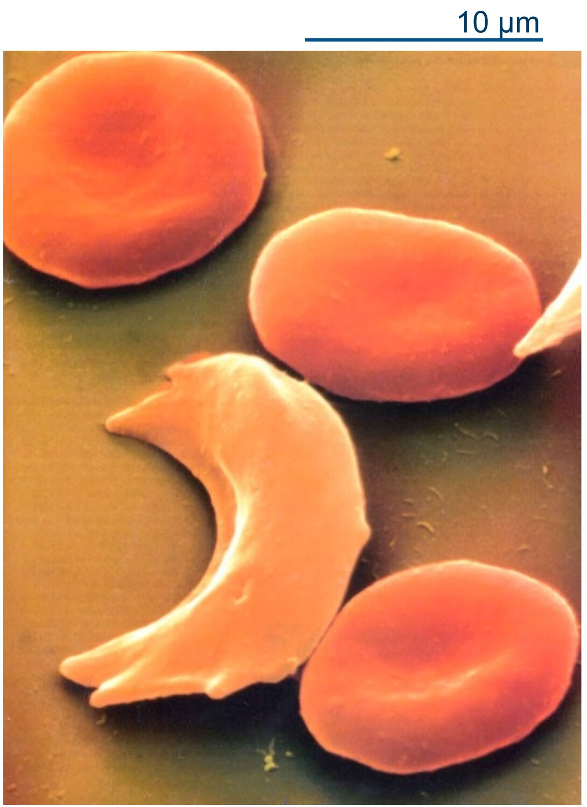
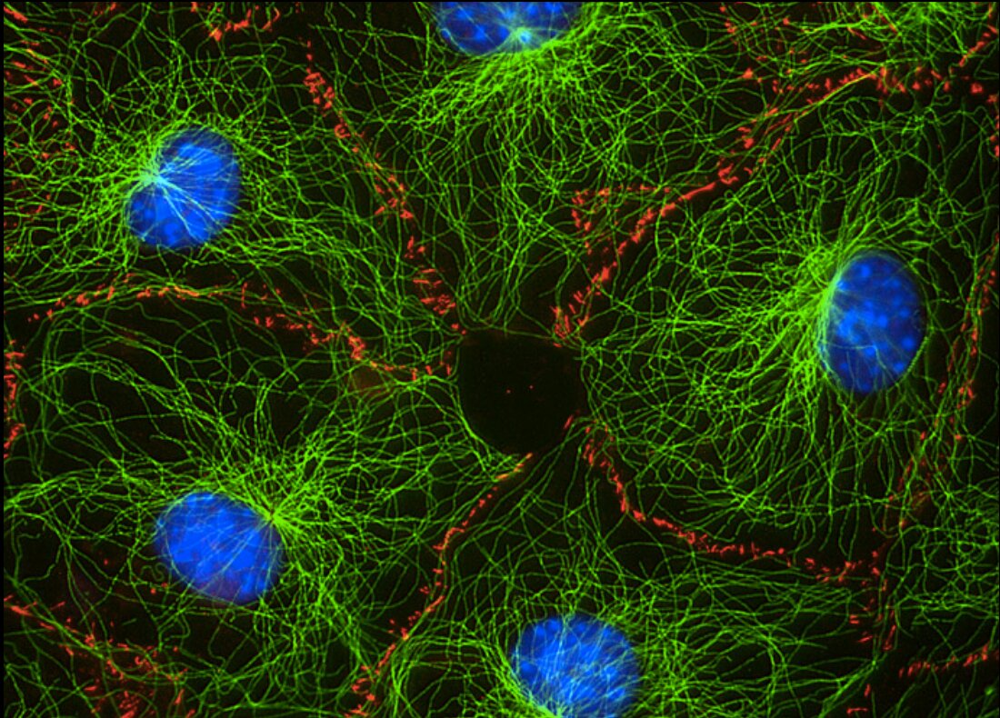
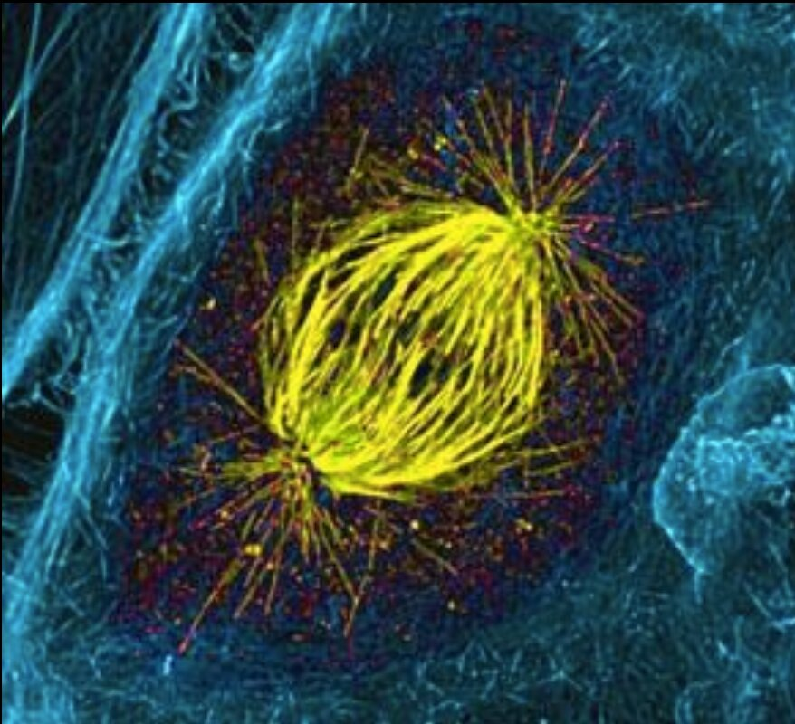
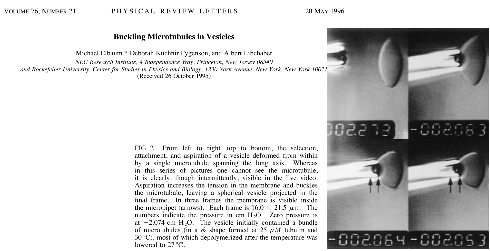
Elbaum et al. 1996 Phys Rev Lett
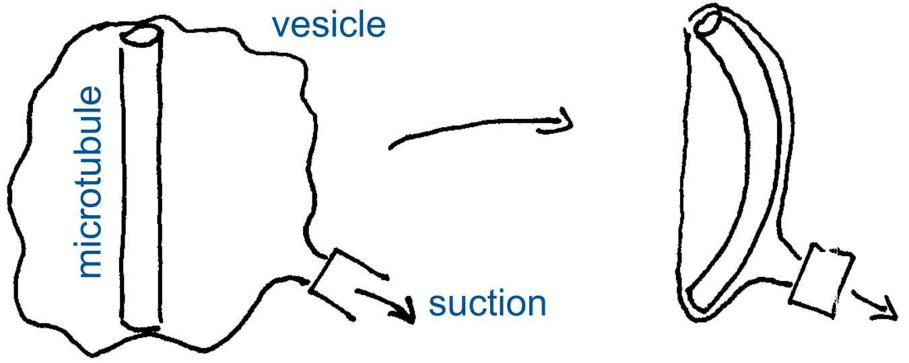
Elbaum et al. 1996 Phys Rev Lett
Brangwynne et al. 2006 J Cell Biol
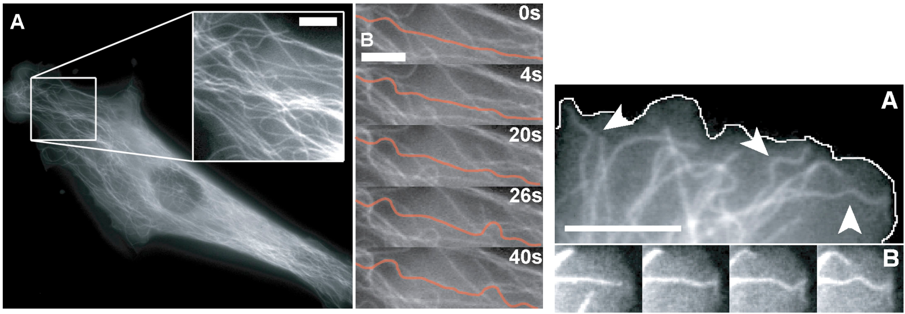
Brangwynne et al. 2006 J Cell Sci
Elbaum et al. 1996 Phys Rev Lett
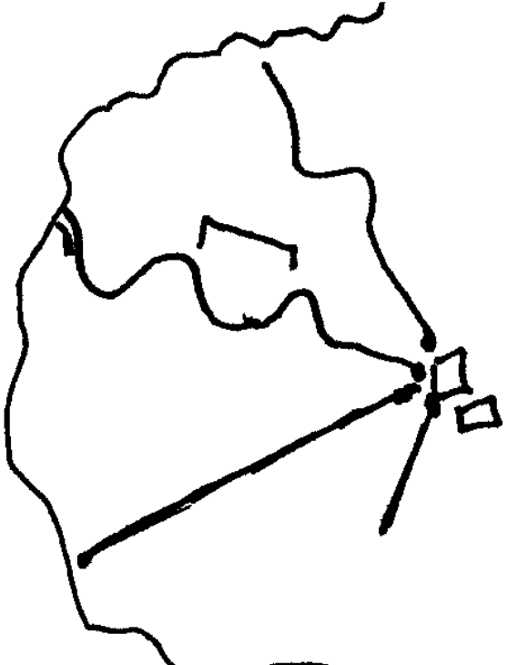
Brangwynne et al. 2006 J Cell Sci
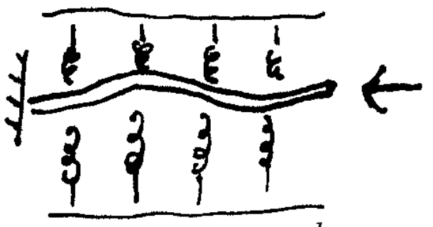
imaginary spatial oscillations
, a wavelength of , and , a buckling force of about 100 pN.
Microtubules in cells can bear enhanced compressive loads.
Brangwynne et al. 2006 J Cell Sci
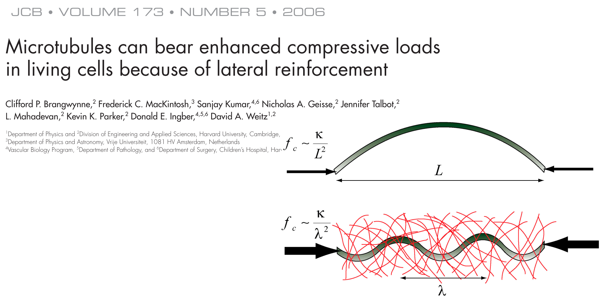
Brangwynne et al. 2006 J Cell Biol
Robinson et al. 2016 Science
Detyrosinated microtubules (normal)
Tyrosinated microtubules
Robinson et al. 2016 Science
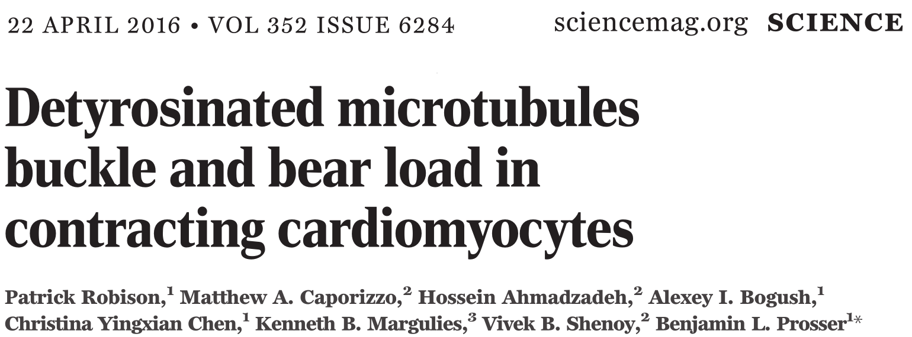
Robinson et al. 2016 Science
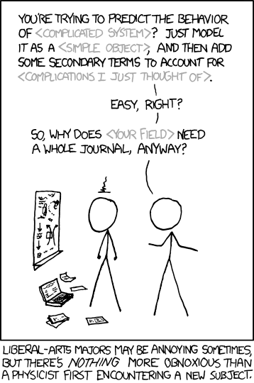